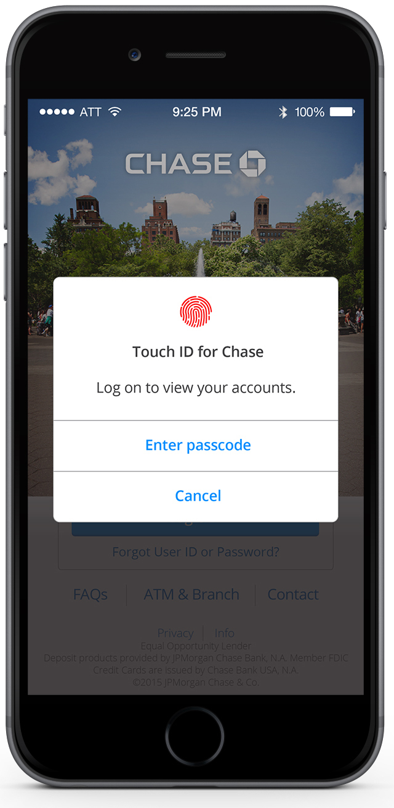
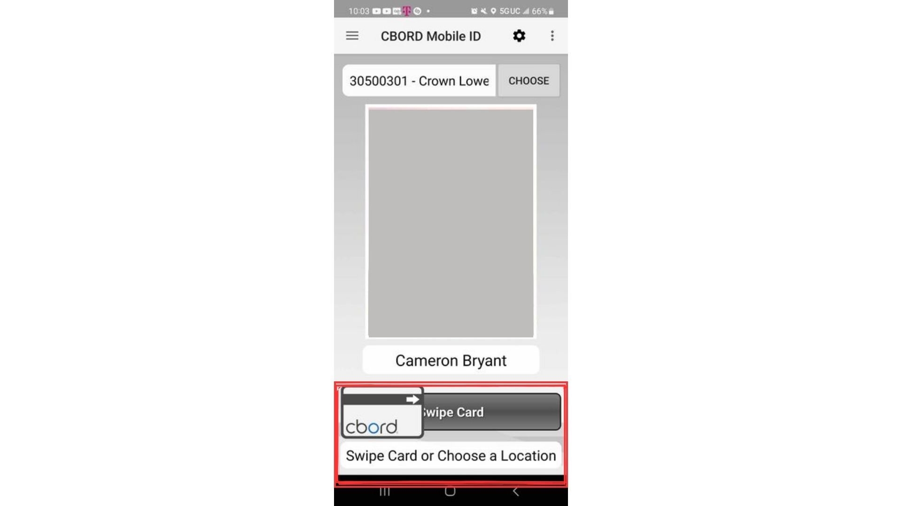
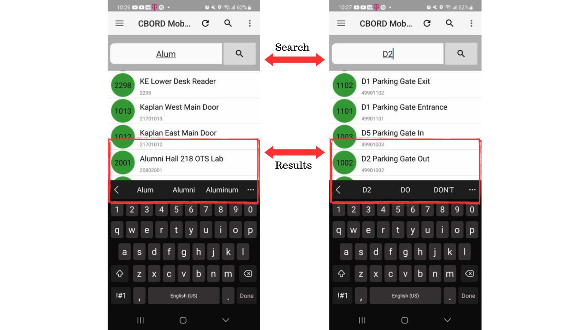

CBORD Mobile ID App UI Improvement Proposal
CBORD mobile app is an app used to replicate the duties of a campus ID by allowing a sign-in user to open doors on their campus if they have the permissions. It uses university server information and credentials to allow you to open specific doors on campus if one were to not have a physical campus ID.

Issues with the CBord mobile app
We found that the CBord mobile app is not well designed, when you search for a door in a certain building on campus the app:
- Scrolls you down the list to the first matching result.
- This list isn't in alphabetical order, so you might have to scroll up or down more to find other doors in the same building.
- Moves your recent search to the top so that the next time you search for another door in that building, it always takes you to the top.
This provoked us to investigate the application more. After auditing the application for its usability, accessibility, and functionality, we found that the application had plenty of issues. Some of which we believe can be solved by updating the UI, while some might be back-end server related issues.
Usability Audit - CBORD mobile.pdfSolutions to Poor UI
Added feature for sign in and authentication:
One of the apps biggest issues amongst users was signing in, authentication, and maintaining it that way. The inconvenience of being signed out at random, the restricted use of the app forcing users to use their pin constantly, combined with the immediate necessity of the app made it very difficult for users to use the app without something in their way.

This issue was found frequently in reviews of the application and our task related survey.Because of these common issues related to entering data previously submitted, especially sensitive material, there must be a simpler method until the app does not have this issue anymore. Whether the repeated sign-in is the result of programming issues or a failsafe to protect sensitive data, it must be a solution to this problem.
Like many modern applications, sensitive data is usually tied to an account such as google or apple, or stored within the cache of the application. This data must be preserved to prevent this issue from occurring, while also allowing it to access securely. An easy fix for this would be a fingerprint sign-in method. Many apps that have sensitive data force users to enter login information again after exiting the application, but allow for re-entry via fingerprint identification.

This makes the entire process much more smooth by requiring only a single sign-in. Integrating fingerprint sign-in

WIFI Related Bugs
The CBORD mobile ID app promotes the use of WIFI to effectively use the app. It can be assumed that because WIFI is often a stronger source of communication than mobile data, it can be more functional by having easier access to servers it needs to access the doors. This is an understandable concept that is highly recommended but also too persistent on the app.

This pop-up window is very persistent, as there is no option to deny its reappearance. In fact, the window is non-functional, defeating the purpose of its appearance.
When a user presses no, it allows them to continue forwards. If they somehow change their page from the options of doors and later return, the window reappears. It never goes away unless a user continuously presses no everytime they desire to open a door, or they connect to the wifi.
When a user presses yes, it allows them to continue, but does not connect the device to wifi automatically. This may be because it doesn’t have the correct permissions to change your device. It creates a loop of this window popping up every time the application is used, until a user manually connects to the wifi.

There are two suggestions to solve this problem, The first is very simple, as it is to make the window functional. To do this, the app must prompt the correct permission or have the correct programming, that when yes is selected, it connects the device to the most available wifi the user has. The second solution is to allow the pop-up to have a do not ask again feature. This is common amongst repeated pop-up windows on mobile devices. Allowing this option makes this interference less problematic for users.
Challenging Front Page UI Elements
On the front page of the application, the user sees any related profile picture to their account, the option to choose the location they were to access, various setting icons and lastly, an option to swipe card or choose a location.

If there is a selected location already determined above the user's profile picture, they can then use the swipe feature to immediately open the door without the need to go down a list. The issue is that this is not clear. The text at the bottom says choose a location or swipe card. This text can be confusing for some, especially as the swipe feature has inconsistent ability of use. While asking various people and using different devices, we found it was consistent for every device. This is likely a hardware related issue, but maybe the sensitivity of this button could be altered. The true problem lies in the clarity of the text, it should be changed to “Choose a location then swipe card”, to hinder confusion amongst users.
Concerns Finding a User's desired location
One of our immediate issues that was brought up was related to finding a user's desired destination when looking for locations to open. This was an issue found common amongst reviewers and during research of the application.
When searching for a location, unlike most applications, your search result is not shown first, but rather last in the space between the search bar and keyboard. This is the result of how the app searches, the method used brings you to the closest result by scrolling through the list for you.
A related issue was that the app Moves your recent search to the top so that the next time you search for another door in that building, it always takes you to the top. This results in the organization that is undefined, to become even more unorganized than before.

Most websites search by removing irrelevant search options. For example, once the letter a is entered into a typical search engine, any phrase that doesn’t use the letter a, is removed from view. As the phrase expands, any similar phrases that share similar spelling or letters, even if they are a different size or have 1-2 different letters, are put into view for users.
This should be the solution for this problem. Making it an appropriate search feature would be more beneficial for users, especially ones with a larger amount of options. Another issue to be considered is how locations are organized. Though they are grouped, it is not clear what criteria they are ordered in, this makes it more challenging to find a location than it needs to be. Simply making it alphabetical would solve this issue for those with hundreds of locations for them to access. Though this can be a scaling related concern, affecting larger universities than smaller campuses, it has a solution that can be implemented easily.
User Interface Visuals
Some users expressed dissatisfaction with the outdated interface, some describing it as reminiscent of the late 1990s. There is no clear way to fix this, as it is a creative related problem. To solve this issue, you must consult a graphic designer or software engineer to improve on elements of the app
Technical Issues
There are plenty of technical problems with the app. To truly discuss solutions and improvement to these problems, we must be aware of the back-end programming of the app. Though we cannot find a solution here, it should be acknowledged regardless. This has frequent issues with refreshing loading issues. We found users spending much time on signing in due to load times.
There were also times where the app took multiple attempts to access doors for users and unfortunately at times, did not work at all. This can be an unfortunate situation, but can create dire consequences. Numerous users reported the app's inconsistent performance, describing it as barely functional, rarely working, and failing to authenticate. This led to instances of being locked out and wasted time during login attempts. This is an immediate concern that requires knowledge of how the app’s server functions work.
Overall App Analysis
We found the app to have many issues when using the app. Most were inconveniences for the users, some halted progress entirely. These solutions would make the app more convenient and improve user experience, but ultimately do not affect technical issues plaguing the app. Until both are resolved, the CBORD Mobile ID app is a buggy app with unappealing visuals.